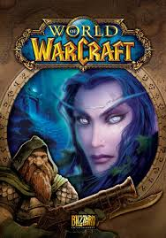

World Of Warcraft Is Made By A Huge Studio That Still Is Around Today
19 Years Later The Game Has Lost Most Players But Still Has A Smaller Playerbase And In Top 3 MMOs Of All Time
By Andrew Miracle Published 19 hours ago
 In 2004 when the World of Warcraft first came out World of Warcraft became an instant hit. Reaching around 12 million active subscribers in 2009.
People stayed subscribed during the expansion called Wrath Of the Lich King. It was after this expansion that changed the game forever. The company a few years before 2010 had been bought partially by Activision. Activision is the same company that brings us
a call of duty each year. They are notorious for ruining every game franchise they have had their hands on slowly but surely. This would be evident once the expansion cataclysm came out in 2010. In this expansion, Activision had partial control over how the company
ran its monetization of the game. This was the same year they introduced Microtransactions. These microtransactions were small at first just simple mounts and pets. This led to max level boosts and buying in-game currency for an exchange of real money.
In 2010 the amount of subscribers dropped around 2 to 4 million from its highest which was 12 million. Each year it would get lower and lower to a point in 2016 they would stop reporting the numbers. Just like Call of Duty, Activision was the death of what
was considered one of the best games ever to exist. No doubt WOW today is still an enjoyable game to the degree it is impossible to play without spending thousands of dollars in real life. The reality is unless you buy gold you can and will not be able to any end game content.
 World of Warcraft has its problems considering they have gotten rid of most of the original devs. The world of Warcraft cycle has been completely ruined
by a greedy company that cares more about saving a buck than any type of decent gameplay. They have fired most moderators that would ban RMT and
bots. Not only are there fewer than 30 active moderators (last time I checked on their forums) but it takes weeks if not months to get a
genuine response from them. They even will use bots to respond to tickets. I know this because I contacted the moderators of Wow last year and they gave me a copy and pasted response at 6:07 am. The reason this is a bot responding is my dad contacted them one day and they responded word for word the same response to my ticket as they did for his. Not only that but he also got his copy and pasted response at 6:07 am. These were made 2 weeks apart and were not related. They falsely ban players for being "bots".This corruption has been going on for the past 7 to 8 years. One instance of this
is when they banned a 70-year-old player for being a bot just because he wasn't playing as fast as other players. The moderators have also been
caught threatening players with Account closures for taking their farm spots in the game or friendly criticism.
World of Warcraft has its problems considering they have gotten rid of most of the original devs. The world of Warcraft cycle has been completely ruined
by a greedy company that cares more about saving a buck than any type of decent gameplay. They have fired most moderators that would ban RMT and
bots. Not only are there fewer than 30 active moderators (last time I checked on their forums) but it takes weeks if not months to get a
genuine response from them. They even will use bots to respond to tickets. I know this because I contacted the moderators of Wow last year and they gave me a copy and pasted response at 6:07 am. The reason this is a bot responding is my dad contacted them one day and they responded word for word the same response to my ticket as they did for his. Not only that but he also got his copy and pasted response at 6:07 am. These were made 2 weeks apart and were not related. They falsely ban players for being "bots".This corruption has been going on for the past 7 to 8 years. One instance of this
is when they banned a 70-year-old player for being a bot just because he wasn't playing as fast as other players. The moderators have also been
caught threatening players with Account closures for taking their farm spots in the game or friendly criticism.